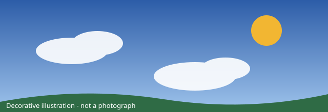
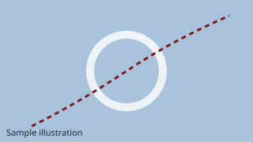
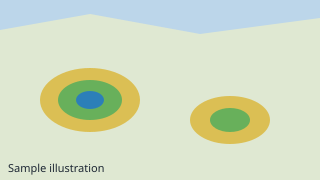
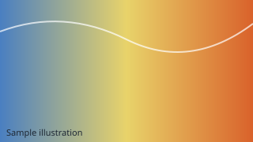

Default sample location
Alder Ridge, Northmere
Sample reading at sample time 14:00, "Sample Day 1". Invented.
SAMPLE DATA Every value on this page is fictional and invented for a research project. It is not a forecast and does not describe current conditions.

Next hours
Maps and outlooks

Severe Weather Map
Sample alert levels at eight fictional places.

Convective Outlook
Sample thunderstorm chances.

Wildfires
Sample fire-risk words on an invented map.
Radar
A six-frame sample loop you control.
Sample alerts
SAMPLE DATA Every value on this page is fictional and invented for a research project. It is not a forecast and does not describe current conditions.
Favorites
Saved in this browser only. Use "Save to favorites" on a forecast page.
No favorites saved yet.
Weather news
Original sample articles. No advertising or sponsored teasers.
Science - sample
Why sample fog forms in valleys
A made-up explainer.
Storms - sample
Reading a pretend storm track
Pairs with the storms page.
Preparedness - sample
A sample go-bag list
Demo checklist you can tick.
Explore more
Historical weather
Invented monthly summaries, 2015 to 2024.
Hurricane & tropical cyclones
Five fictional systems.
Station network
Search ten fictional stations.
Videos
Placeholder players only.